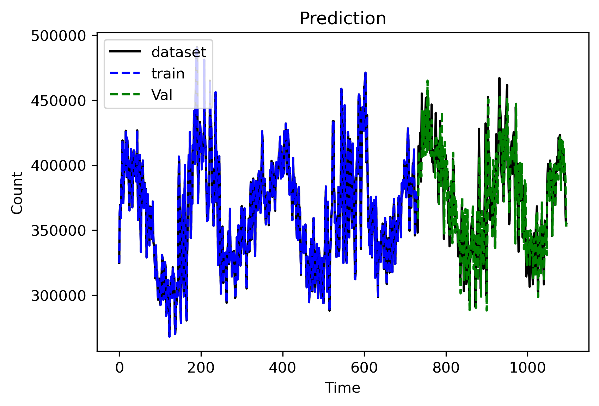
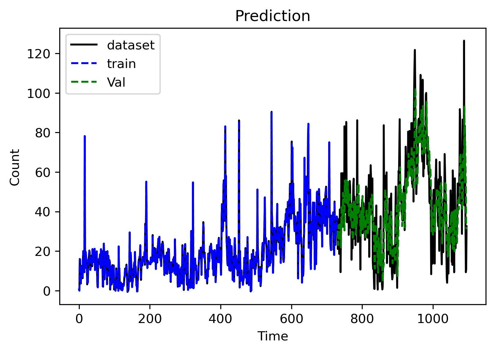

import numpy as np
import matplotlib.pyplot as plt
import matplotlib as mpl
import pandas as pd
from statsmodels.tsa.vector_ar.var_model import VAR
from statsmodels.tsa.vector_ar.vecm import VECM
from sklearn.metrics import mean_squared_error
from datetime import datetime as dt
import datetime
def read_data():
# Load CSV into dataframe and format
df = pd.read_csv('final_daily.csv')
df['date']=pd.to_datetime(df['date'])
df=df[df['date']<datetime.datetime(2023,1,1)]
variable = ['price', 'demand', 'avg_temp']
VAL_PERC = 0.30
n_train = int(len(df[:-365]) * (1 - VAL_PERC))
dataframe_train = df[variable][0:-365]
train_df = dataframe_train.values.reshape(-1, 3)
dataframe_test = df[variable][-365:]
test_df = dataframe_test.values.reshape(-1, 3)
dataframe_dataset = df[variable][0:df.shape[0]]
dataset= dataframe_dataset.values.reshape(-1, 3)
return df, train_df, test_df, dataset
df, train_df, val_df, dataset = read_data()
# # make prediction on validation
# start = dt.now()
# model = VAR(endog=train_df)
# model_fit = model.fit()
# prediction = model_fit.forecast(model_fit.endog, steps=1)
# running_secs = (dt.now() - start).microseconds
# print(running_secs)
# #prediction = np.array(prediction)
train_df.shape
(731, 3)
# make prediction on validation
prediction = []
history = list(train_df)
start = dt.now()
for i in range(len(val_df)):
model = VAR(endog=history)
model_fit = model.fit(maxlags=24, ic = 'aic')
output = model_fit.forecast(model_fit.endog, steps=1)
yhat = output[0]
prediction.append(yhat)
obs = val_df[i]
history.append(obs)
running_secs = (dt.now() - start).microseconds
print(running_secs)
prediction = np.array(prediction)
835000
print(running_secs * (1e-6))
0.835
prediction
array([[3.03873502e+01, 3.60908992e+05, 5.43996830e+00],
[2.30690218e+01, 3.59533353e+05, 4.80919047e+00],
[3.06477322e+01, 3.99821453e+05, 3.86642687e+00],
...,
[5.23455678e+01, 3.86498088e+05, 4.29379678e+00],
[3.19458708e+01, 3.61967331e+05, 4.33590100e+00],
[3.09719545e+01, 3.52857247e+05, 5.12751994e+00]])
#converting predictions to dataframe
pred = pd.DataFrame(index=range(0,len(prediction)),columns=range(3))
for j in range(0,3):
for i in range(0, len(prediction)):
pred.iloc[i][j] = prediction[i][j]
#check rmse
print('rmse is : ', np.sqrt(mean_squared_error(pred, val_df)))
rmse is : 10614.541232255247
seq_size = 1
def plotting (dataset, trainPredict, valPredict):
# shift train predictions for plotting
#we must shift the predictions so that they align on the x-axis with the original dataset.
trainPredictPlot = np.empty_like(dataset)
trainPredictPlot[:, :] = np.nan
trainPredictPlot[seq_size-1:len(trainPredict)+seq_size-1, :] = trainPredict
# shift val predictions for plotting
valPredictPlot = np.empty_like(dataset)
valPredictPlot[:, :] = np.nan
valPredictPlot[len(trainPredict)+(seq_size*2)-2:, :] = valPredict
# plot baseline and predictions
mpl.rcParams['figure.dpi'] = 300
plt.plot(dataset, color='k', label='dataset')
plt.plot(trainPredictPlot, color='b', label='train', linestyle='dashed')
plt.plot(valPredictPlot, color='g', label='Val', linestyle='dashed')
plt.legend(loc="upper left")
plt.title("Prediction")
plt.xlabel("Time")
plt.ylabel("Count")
plt.show()
return
plotting (dataset[:, 1].reshape(-1, 1), train_df[:, 1].reshape(-1, 1), prediction[:, 1].reshape(-1, 1))

plotting (dataset[:, 0].reshape(-1, 1), train_df[:, 0].reshape(-1, 1), prediction[:, 0].reshape(-1, 1))

np.square(val_df[:, 0] - prediction[:, 0].reshape(-1, 1)).mean()
900.0812146846905
np.abs(val_df[:, 0] - prediction[:, 0].reshape(-1, 1)).mean()
23.688494193535767
def mape(x, y):
error = abs(x-y)/abs(x)
error[error > 1] = 1
return np.mean(error)
mape(val_df[:, 0], prediction[:, 0].reshape(-1, 1)[:, 0])
0.32629816413169305
np.square(val_df[:, 1] - prediction[:, 1].reshape(-1, 1)).mean()
2731249078.2024446
np.abs(val_df[:, 1] - prediction[:, 1].reshape(-1, 1)).mean()
42321.846468101474
def mape(x, y):
error = abs(x-y)/abs(x)
error[error > 1] = 1
return np.mean(error)
mape(val_df[:, 1], prediction[:, 1].reshape(-1, 1)[:, 0])
0.038502978785358785